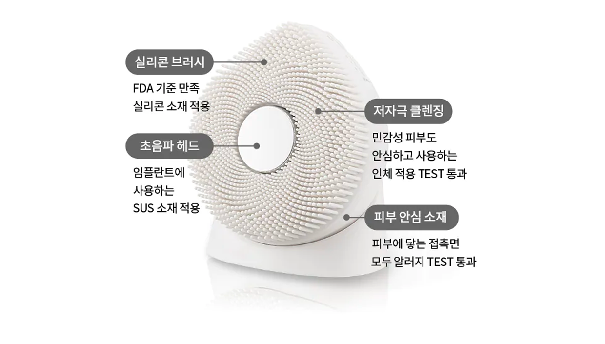

기능 3
클린케어 할 사람, 여기여기 붙어라!
섬세하게 피부를 쓰담쓰담

* 실리콘 재질 : FDA 21CFR177.2600 기준 만족 소재 / 2020.9.8~9.15 / SGS test 통과
* 초음파 재질 : ASTM(미국 재료 시험 협회) 기준의 의료용 SUS316L 표준 만족 소재 / 2021.5.27~6.10 / SGS test 통과
* 인체적용시험 결과 : 라비다 포밍클렌저와 함께 사용 / 손 세정 대비 개선율 / 2021.4.29~5.4/ 성인 여성 26명 (민감성 피부6명 포함) 1회 사용 / 피엔케이피부임상연구센타(주)
매일 하는 클렌징 이니까
간편하게 관리할 수 있도록 만들었어요.
안전성, 위생까지 모두 챙겼어요.